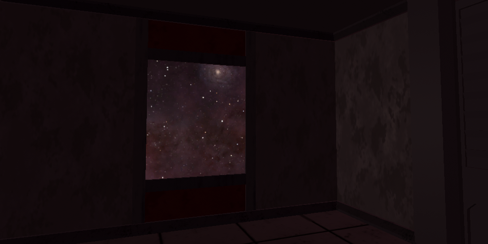
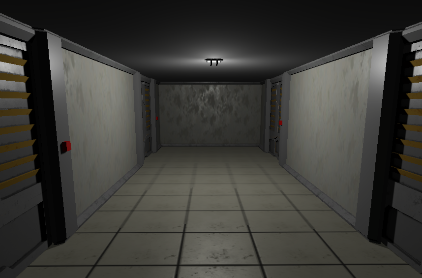

Galactic Engineer VR is a VR game based on looting derelict ships and crafting components to survive.
The player will explore abandoned derelict ships and stations and face many enviromental dangers, like sudden pipe bursts or interfierence from a close-by star.
Status: STILL IN EARLY DEVELOPMENT
Release Date: No release date set.
 Please note these images are from a very early version, they are subject to heavy change!